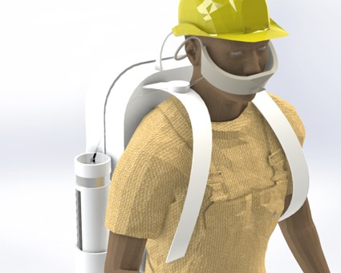
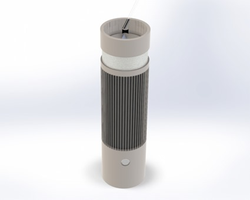
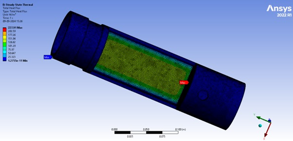
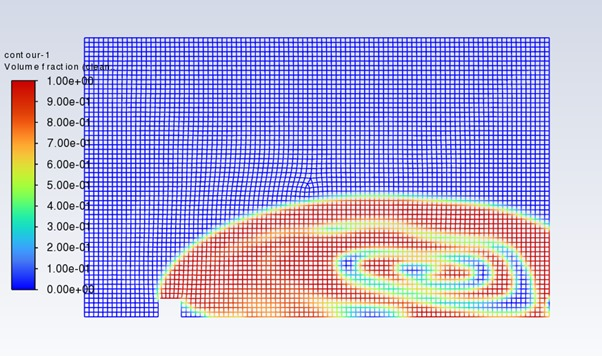

About The Project
Air pollution has emerged as a significant global health concern, particularly in urban areas like India. Exposure to harmful pollutants, such as particulate matter (PM2.5), can lead to serious respiratory and cardiovascular problems. To address this issue, we have developed a portable air purifying backpack attachment.
- This innovative device is designed to provide personal respiratory protection by filtering out harmful pollutants from the ambient air. It features a high-efficiency particulate air (HEPA) filter, which effectively captures fine particulate matter. The device also incorporates air quality sensors to monitor the ambient air and provide real-time feedback to the user.
- By providing a continuous supply of clean, filtered air, our backpack attachment aims to improve the quality of life for individuals exposed to air pollution. Whether commuting to work, exploring the city, or engaging in outdoor activities, this device offers a practical and effective solution to protect your respiratory health.
Deliverables

Airflow Optimization
Compactness & Portability
Battery Life

Integration with Wearables
Durability & Reliability
Filter Replacement
Product Design


CAE Analysis

